Rules of shot composition
The Rule of Thirds
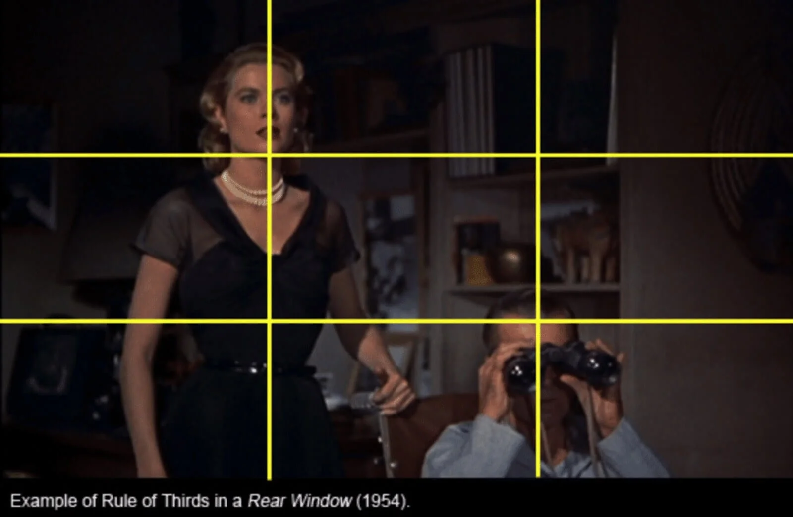
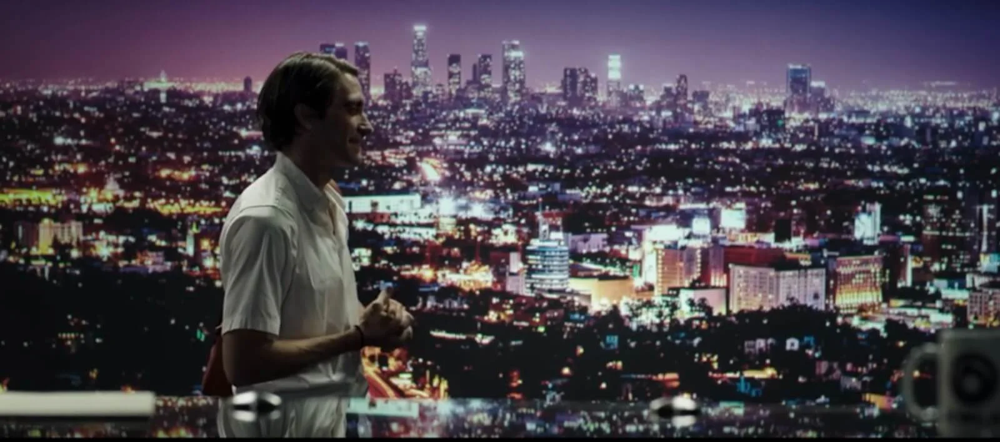
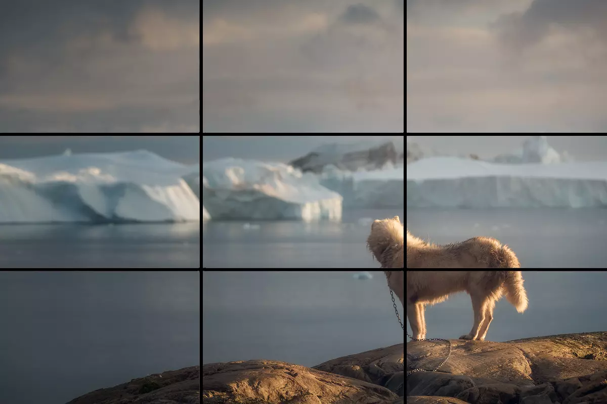
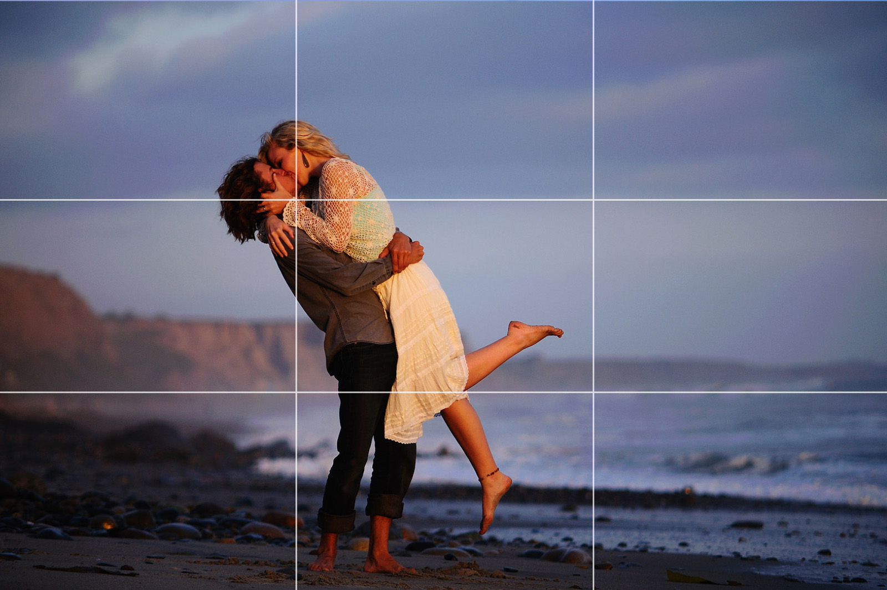
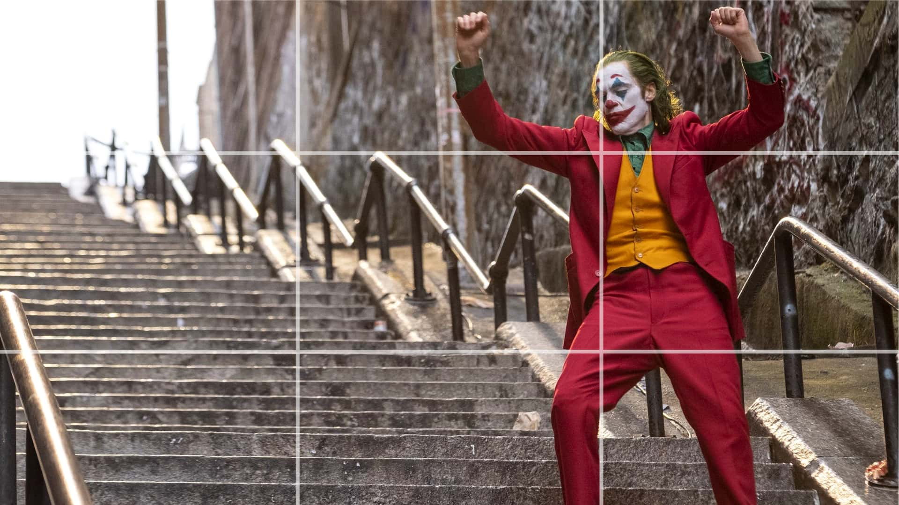
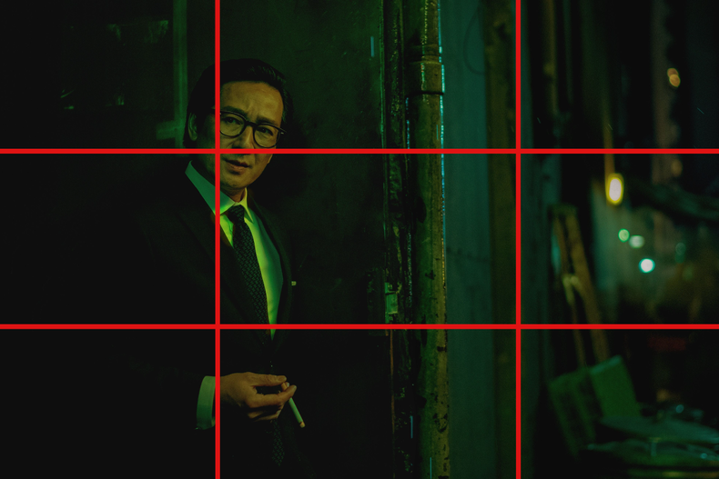
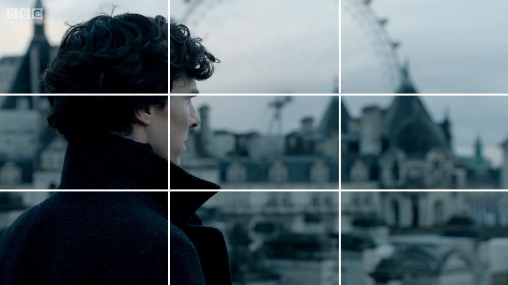
The rule of thirds is a compositional technique that suggests dividing
the frame into nine equal sections using two horizontal and two vertical
lines. By placing the subject or other important elements along these
lines or at their intersections, you can create more visually appealing
and dynamic shots.
Balance and symmetry
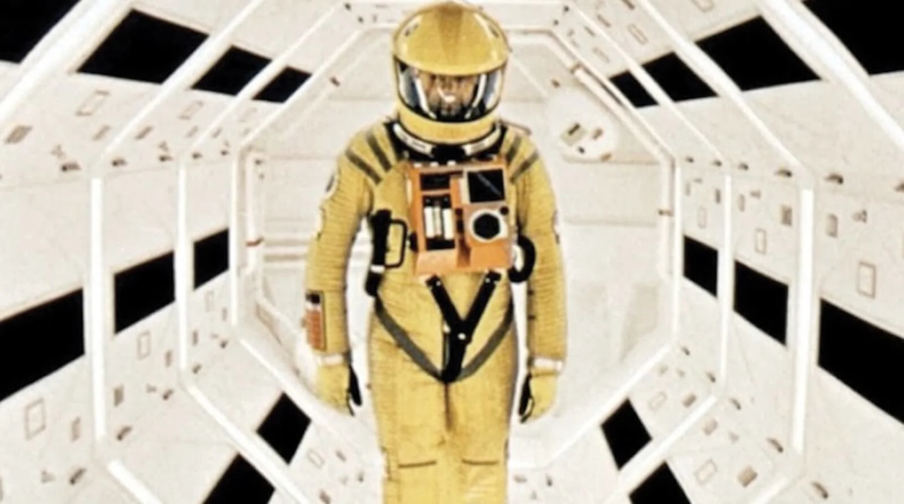
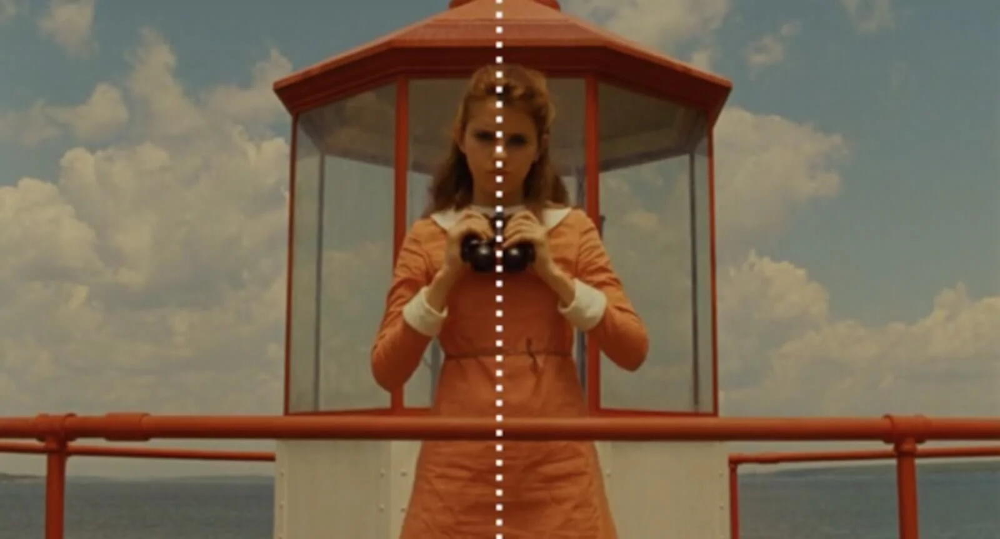
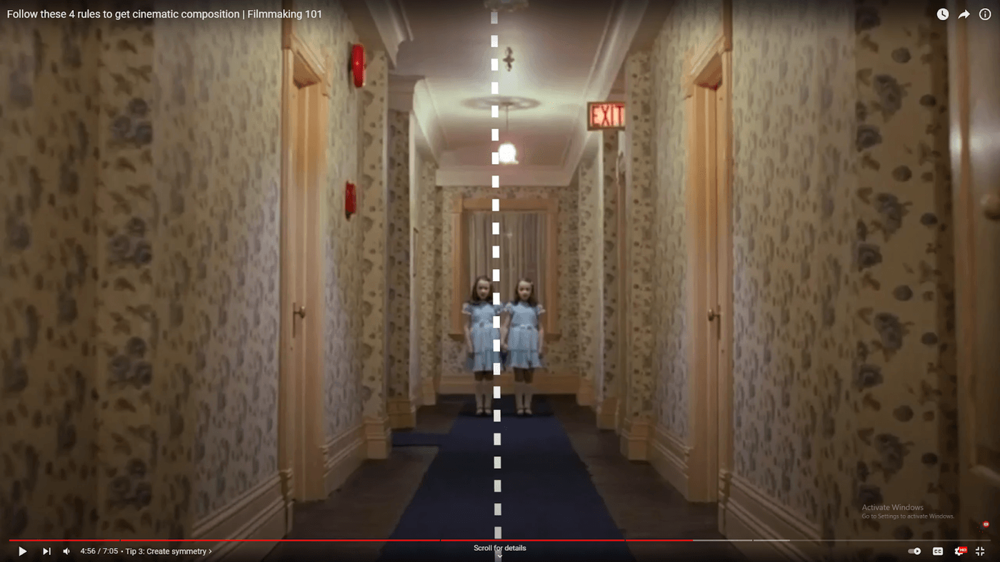
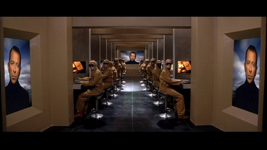
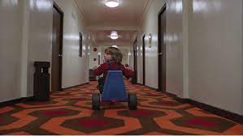
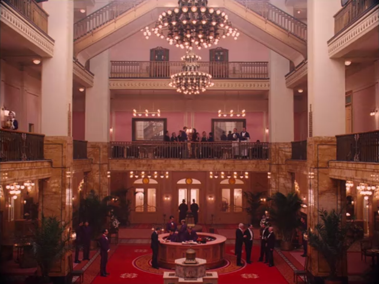
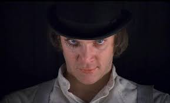
Balance and symmetry are compositional techniques used in cinematography
to create a sense of stability, harmony, and order within the frame.
Balance involves distributing visual elements in a way that feels evenly
weighted, while symmetry involves arranging elements so that they mirror
each other across an imaginary central axis. Both techniques can be
employed to convey specific emotions or create a particular mood in a
scene.